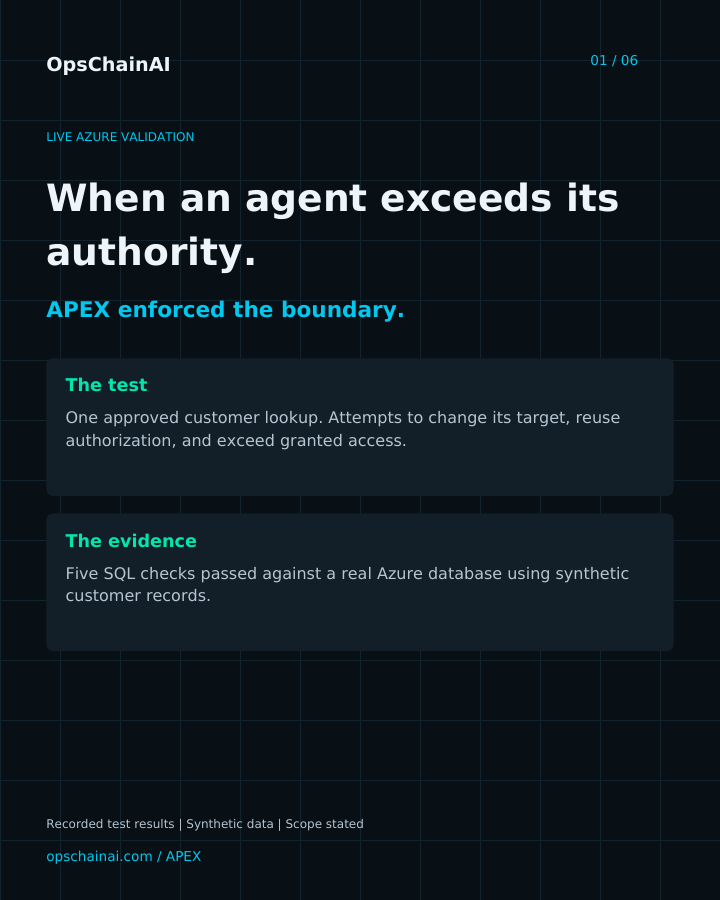

When an agent exceeds its authority.
APEX checks the caller, the resource, and the signed execution before dispatching a governed action. In controlled Azure tests, approved SQL access succeeded while restricted requests, changed arguments, and replayed executions were rejected.
Recorded validation: September 24, 2026. Real Azure services, synthetic customer records, isolated test deployment. This page presents recorded results; it does not run requests against the test app.
Live SQL checks passed
Authorized access, resource denial, argument binding, replay rejection, and acceptance of the original request after a tampering attempt.
Concurrent requests admitted
Separate duplicate-execution and one-action-budget tests each allowed one request and rejected five.
One caller. One permitted customer.
The gateway identity could read two synthetic customer records. The caller's policy granted access to customer 910001 only. APEX enforced that narrower grant before making a SQL call. Direct database access by the agent was not evaluated in these tests.
Before dispatch
Entra identity verification, signed tool and argument checks, persistent replay and budget admission, exact resource authorization, and an approved-client check govern the path to SQL.
At the resource
A dedicated managed identity accesses Azure SQL. The tested database user had SELECT permission and no INSERT, UPDATE, or DELETE permission on the Customers table. An immutable audit attempt precedes dispatch; a result event follows.
Approved work succeeds. Deviations are rejected.
| Check | HTTP | Observed result | Outcome |
|---|---|---|---|
| Approved customer | 200 | Exact synthetic record returned | PASS |
| Restricted customer | 403 | Resource access denied | PASS |
| Changed customer argument | 403 | Invalid execution authorization | PASS |
| Repeated execution | 409 | Execution already consumed | PASS |
| Original request after tampering | 200 | Original authorization still valid | PASS |
Gateway commit: f990a45. The successful lookup was checked against the exact expected synthetic customer record, not just an HTTP status.
Limits persist across a restart.
Separate live tests replaced the container and verified that a used execution was still rejected, a spent budget remained exhausted, and a fresh execution succeeded. State was held in Azure Table Storage. These tests establish the observed admission behavior; they do not claim exactly-once completion of backend side effects.
Audit retention
A separate live audit check rejected unlocked retention. After locking the policy, the recorder accepted a newly written blob and confirmed locked version-level retention. Independent administrative custody of the audit store was not demonstrated.
Evidence provenance
Results here are transcribed from operator-supplied console output. The original machine-generated reports are retained in the private APEX repository. Download the public summary for report paths and deployment identifiers.
Download public results summaryWhy test these boundaries?
The published OpenAI and Hugging Face reports describe unauthorized use of shared infrastructure, credential compromise, and movement into additional systems. Those events motivate questions about the authority granted to an agent and the routes it can use.
SQL was the resource in this APEX validation. Applying the controls to Artifactory would require a connector and tests for repository operations. No Artifactory integration or reproduction of that incident is claimed here.
Read OpenAI's report / Read Hugging Face's technical timeline
Review the demonstration.
Use the arrows to browse the slides, or download the PDF. Slides show recorded test results.

What still needs validation.
The enforcement shown here depends on requests passing through APEX. Workload isolation, direct network bypass, host compromise, and theft of trusted signing material require further testing. The current results support specific controls within a defined test deployment.
A scoped pilot starts with one workflow, synthetic records, explicit permissions, and agreed success and rejection cases. The deliverable is a record of observed behavior and the remaining deployment-specific gaps.
Discuss a scoped validation